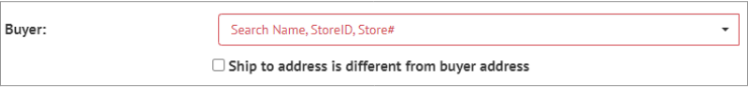

6. Orders¶
The Orders page in Cibos is separated into three essential groupings: Orders, Manufacturing Orders, and Fulfillment Status. Manufacturing Orders are separated from the other Order types because of a different workflow. Order types include Sales Order, Purchase Order, Credit Memo, Trade & Marketing Expense, and Lab Order. Manufacturing Orders are further separated into five stages to track Manufacturing Orders as they move through the stages of Open, Prepping, Processing, Storage, and Packaged. Fulfillment Status is used for tracking orders that are Shipped, Received, Invoiced/Billed, or Paid.

6.1. Orders¶
Order types include Sales Order, Purchase Order, Credit Memo, Trade & Marketing Expense, and Lab Order. Use the Search function to narrow down a long list of Orders using Order # or Vendor and find a specific Order. On the Orders header, you can also quickly see how many Orders are on your list. Filter Orders by Supplier, Buyer, Open, and Sent by clicking the Filter icon.

How to Add a New Order
Click the Plus icon on the Orders header to add a new Order to your Orders list.

A New Order Type form will appear. Select the appropriate order type: Sales Order, Purchase Order, Credit Memo, Trade & Marketing Expense, and Lab Order. Then click Next.

6.2. Sales Order¶
The menu on the right-hand side of the Add Order form allows you to navigate to different pages of the Order form, while the page content is situated on the left-hand side.

Order
Start on the Order page, where you can add the following information:
Buyer – enter the Buyer Name, StoreID, or Store#. The dropdown menu is populated from your Vendors and Store lists

Ship To – select the Ship to address is different from buyer address as needed, then enter the shipping address in the Ship To field

Ship From – enter the Manufacturer/Supplier Name, StoreID, or Store#. The dropdown menu is populated from your Manufacturers and Suppliers lists.

Requested Dates – set the requested Ship By and Deliver By dates using the pop-out calendar or entering them manually.

Term – Select the Term from 15, 30, or Prepaid

Items – Add Packages by clicking the Plus icon based on the selected Buyer. The Cost/UOM will auto-populate, and you can set the desired quantity (QTY). The Total cost for a Package is also listed. Click the green check to save the Item.

Once an Item is added, the Order page expands to include a new section displaying the Order’s Total Weight and Total Qty.

If you’d like to add an Allowance/Discount, choose from the following options: Discount, Freight Allowance, Marketing Allowance, or Spoils Allowance. Then set it as either a % or $ Allowance/Discount and click the Plus icon to add.
You can also set the Shipping Cost.
Finally, add Comments & References by choosing a subject, General, External Order Number, or Link and writing a comment in the text box. Then click Save.
Assign
Before you can Assign a User, a Mobile Work Order User must be added from the Collaboration page. Then click Assign in the menu and select the preferred User from the drop-down menu

Contacts
The Contacts page displays a list of Contacts pulled from your CRM records based on the Buyer and Manufacturer/Supplier picked on the Order page. This is a quick and efficient way to know who to contact concerning specific orders.

Logistics
The Logistics page lists any Customers & Suppliers from the CRM that are denoted as the Logistics type. You can instantly view the Vendor Name, Rate, Email, and Phone Number.

Click the checkbox to select the preferred Vendor, and a set of new options appears. Now you can add the following Logistics information:
Logistics Cost
Total Weight
Handling Unit Type
Total Handling Units
NMFC Designation
Delivery Notes
Note

When the Logistics information is completed, you can click the Download or Send buttons under the Action heading.

Send
You can Send a copy of the Order to the Buyer and/or Manufacturer/Supplier from the Send page.

Download
From the menu, click the Printer icon to Download a copy of the Sales Order as a PDF file. Click the Document icon to Download a copy of the Sales Order as an edi file.

Batch Numbers
Add Batch Numbers by selecting Items from the drop-down menu. Then click Add.

Adjust Qty Picked/Pack and click the green checkmark to Save the selected Item.

Status
Set the Sales Order Status by clicking Status in the menu and selecting one of the options in the drop-down menu: Open, Shipped, Received, Invoiced, Billed, Completed, and Paid. This also moves Orders into the different Fulfillment Status categories.

Archive
Once a Sales Order Status has been set to Paid, hover over the Order and click the Edit button.

Under Status, find and click Archive. Click OK to confirm you wish to Archive this Order.
You have now finished editing an Order through its full lifecycle from Open to Paid and finally Archived.
6.3. Purchase Order¶
Purchase Orders have much of the same workflow as Sales Orders, so this guide will only cover the workflow features unique to Purchase Orders. Please reference the Sales Order section if you need clarity for the rest of the workflow. The menu on the right-hand side of the Add Order form allows you to navigate to different pages of the Order form, while the page content is situated on the left-hand side. Purchase Orders have the following pages: Order, Assign, Logistics, Store at Internal Location, Send, Download, Status, and Archive.

Order
Start on the Order page, where you can add the following information:
Supplier – Search Vendors / Suppliers listed in your CRM
Ship To – Search a Shipping Location populated from your CRM
Deliver By – Set the requested Deliver By date using the pop-out calendar or entering them manually
Term – Select the Term from 15, 30, or Prepaid
Ingredients – select Ingredients that are provided by your chosen Supplier by clicking the Plus icon

Adjust the UOM to order by a different Unit of Measurement, adjust the Ingredient QTY that is being requested, and then click the green checkmark to Save the selected item. You can adjust Cost/UOM as needed, but it’s already populated from your Raw Materials list.
If you’d like to add an Allowance/Discount, choose from the following options: Discount, Freight Allowance, Marketing Allowance, or Spoils Allowance. Then set it as either a % or $ Allowance/Discount and click the Plus icon to add.
You can also set the Shipping Cost.

Finally, add Comments & References by choosing a subject, General, External Order Number, or Link and writing a comment in the text box. Then click Save.
Assign
See Assign under Sales Orders for help
Logistics
See Logistics under Sales Orders for help.
Store at Internal Location
The Store at Internal Location page displays Internal Locations pulled directly from that specific Manufacturer within the CRM.
Send
See Send under Sales Orders for help.
Download
See Download under Sales Orders for help.
Status
See Status under Sales Orders for help. Purchase Orders have the following Status options: Open, Shipped, Received, Billed, and Paid.
- Received
Once a Purchase Order has moved to Received Status, open the Purchase Order entry again. Click on the new menu option, Received.

Enter Lot Numbers and Expiration information. Then in the bottom right corner, find and click Add to Inventory.

Archive
See Archive under Sales Orders for help.
You have now finished editing an Order through its full lifecycle from Open to Paid and finally Archived.
6.4. Credit Memo¶
Easily add a Credit Memo by entering the Customer/Vendor from the drop-down menu that is populated from your CRM.
Set the Date date using the pop-out calendar or enter it manually.
Then click the Plus icon next to Items to add Items with an associated credit.
Change the Cost/UOM and QTY as needed and click the green checkmark to Save the selected Item. Add Comments & References as needed, then click Save 5. View Memos or Save & Close when the Credit Memo is complete.

6.5. Trade & Marketing Expense¶
Trade & Marketing Expense Orders are created the same way as other orders but only have the following menu options: Order, Logistics, Send, Download PDF, Status, and Archive. See Sales Orders if you need help filling out these fields.
6.6. Lab Order¶
Lab Orders can help your brand ensure that products are being manufactured to the required specifications. Lab Orders are simple to create with only the following menu options: Order, Send, Batch Numbers, Status, and Archive.
6.7. Manufacturing Order¶
Manufacturing Orders are isolated from the other Order types because Manufacturing Orders have a different workflow. Instead of Open, Shipped, Received, Invoiced/Billed, and Paid, Manufacturing Orders have the following stages: Open, Prepping, Processing, Storage, and Packed.
To create a new Manufacturing Order, click the Plus icon and start on the Order page, where you can add the following information:
Manufacturer – Search Vendors / Manufacturers listed in your CRM
Ship To – Search a Shipping Location populated from your CRM
Production Date – Set the requested Production Date using the pop-out calendar or entering them manually
Term – Select the Term from 15, 30, or Prepaid (may be prefilled from CRM)
Ingredients – select Ingredients that are provided by your chosen Manufacturer by clicking the Plus icon.

Adjust the UOM to order by a different Unit of Measurement, adjust the Ingredient QTY that is being requested, and then click the green checkmark to Save the selected item. You can adjust Cost/UOM as needed, but it’s already populated from your Batch Recipes/Menu Items list.
If you’d like to add an Allowance/Discount, choose from the following options: Discount, Freight Allowance, Marketing Allowance, or Spoil Allowance.Then set it as either a % or $ Allowance/Discount and click the Plus icon to add.
You can also set the Shipping Cost.
Finally, add Comments & References by choosing a subject, General, External Order Number, or Link and writing a comment in the text box. Then click Save.

Logicstics
The Logistics page lists any Customers & Suppliers from the CRM that are denoted as the Logistics type. You can instantly view the Vendor Name, Rate, Email, and Phone Number.

Click the checkbox to select the preferred Vendor, and a set of new options appears. Now you can add the following Logistics information:
Logistics Cost
Total Weight
Handling Unit Type
Total Handling Units
Purchase Item Number
NMFC Designation
Delivery Notes
Note

When the Logistics information is completed, you can click the Download or Send buttons under the Action heading.

Shopping List
The Shopping List page displays the specific Ingredient (Raw Material) needed to fulfill the Manufacturing Order, including the Quantity (UOM), Total Units, and Cost. The Total Weight and Batch Cost are also listed at the bottom of the page

Store at Internal Location
Send
See Send under Sales Orders for help.
Download
See Download under Sales Orders for help.
Batch & Lot Numbers
On the Batch & Lot Numbers page, you can change the Batch Number Format to one of the following options:
NOTE: Click the checkbox for Set as Order Number if you want the Batch Number to match the Order Number.
Next to the Manufactured Item, edit or add Manufacturers Lot Numbers.

Click the arrow next to the Name of the Manufactured Item to expand the Ingredient List. Add Lot Numbers for any of the Ingredients (Raw Materials).
After adding the Lot Numbers, click the arrow next to a specific Lot Number to expand the options list:
Expires – Date of Expiration of this Lot
The volume/amount of Raw Materials for each Ingredient is already populated from the Order page but can be changed
Submit
Retire after use
Delete
In Manufacturing Orders lot number pill colors signify requirement of items based on QTY/availability:
Blue – if Lot Number is available and meets need of item
Yellow – if Lot Number is available but does not meet need of item
Red – if Lot Number is zero, but has previously existed in the CIBOS system
Purple – if Lot Number does not exist in CIBOS system
If one Lot Number pill does not meet requirement of item (Yellow) , but a second Lot Number pill added sums to required QTY (Blue) then both Lot Numbers turn Blue
Quality Assurance
The Quality Assurance page will display any Quality Assurance information from the Batch Recipe.
Status
Manufacturing Orders have the following Status options: Open, Prepping, Processing, Storage, Packaged, Shipped, Received, Billed, and Paid. Once a Manufacturing Order advances from Packaged to Shipped, the Manufacturing Order moves out of the Manufacturing phase and into the Fulfillment phase and will be visible in the Fulfillment Status list until the order has moved to completion (Paid/Archive).
Decrementing
When Ingredients are used to create a Manufacturing Order, they must be assigned a Lot Number (covered above) and then decremented from Inventory. To Decrement Lot & Batch Quality, ensure that all Ingredients have a Lot Number and have been Submitted.
Then click Decrement Lot & Batch Qty at the bottom of the menu options.

A Warning message will ask you to Confirm that the Ingredient Quantity outlined in the Manufacturing Order will be removed from Inventory.
Add to Inventory
Once a Manufacturing Order is ready to advance from Storage to Packaged, hover over the Manufacturing Order and click the Arrow. Then click OK to confirm that you want to move that order to Packaged.
The Manufacturing Order page will open to allow you to Add to Inventory. Fill out the following fields for the Manufacturing Order:
Expiration – Select the Expiration date using the pop-out calendar or entering them manually
BestBy – Select BestBy date using the pop-out calendar or entering them manually
Yielded – already populated from Manufacturing Order but can edit if needed
Then click Save & Add to Inventory
Archive
See Archive under Sales Orders for help.
You have now finished editing a Manufacturing Order through its full lifecycle from Open to Paid and finally Archived.
6.8. Fulfilment status¶
Fulfillment Status displays the Status of Sales Orders, Purchase Orders, Credit Memos, Trade & Marketing Expenses, and Lab Orders as they move throughout the fulfillment cycle. Manufacturing Orders are not displayed in the Fulfillment Status area. Use the Search function to narrow down a long list of Orders using Order # or Vendor and find a specific Order. Filter Orders by Shipping, Received, Invoiced, and Completed by clicking the Filter icon.
Move Order to Next Status
To move an order to the next Status, hover over the Order of interest and click the Arrow icon.

How to Edit an Order
To Edit an Order once it’s been created, hover over the Order of interest and click the Pencil (edit) icon.

To select a Date Range for the Order page, click the Calendar icon in the top-right corner. Choose from: All, Last 7 Days, Last 30 Days, or Custom range. Then click Apply.